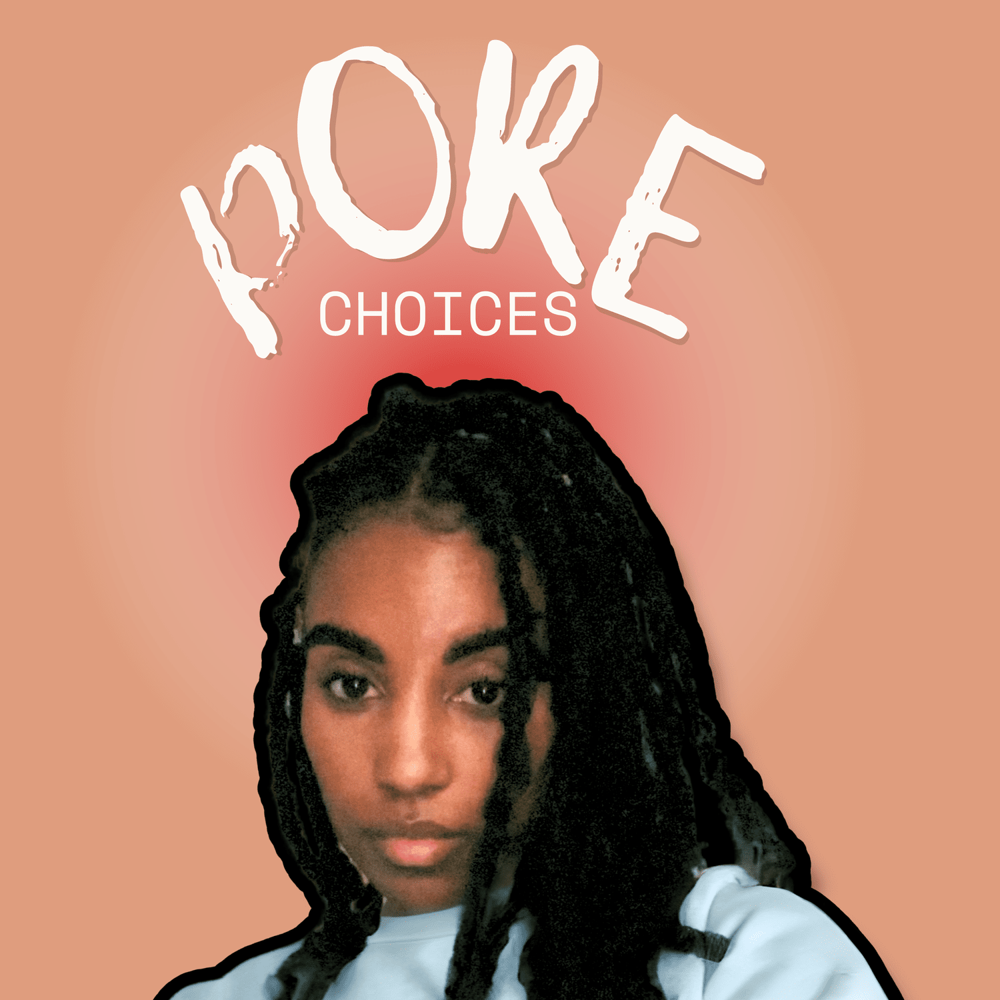

Pore Choices: The Podcast

Hadiyah Daché, licensed cosmetologist & esthetician
2 min
← All articlesThe Book →coming tuesday, january 7th!
The beauty industry thrives on pore choices so why not make it a podcast, too? Join host Hadiyah Daché (@fairyglowmother) as she talks about coveted treatments, overhyped products, and business fails she’s learned from over the past 8 years. From lab-coat level skin science to treatment room confessions, PORE CHOICES serves up the kind of industry intel you won't find on your favorite influencer's feed. So whether you're building your esthetic empire or just overwhelmed with the sheer amount of products being marketed to you all over social media, this podcast delivers straight-talking insights to help turn your pore choices into better choices.
Have you ever heard about the person that quit their full-time job, leaving their six-figure salary behind, to… give facials? I’m sure you have, everyone knows someone who has that story. And no, this isn’t a story about OnlyFans. Anyway, so they leave their job and instantly get booked out in their first month solo! They got $10,000 in deposits alone on the day they quit. Things could not have gone better, honestly.
And their first two weeks diving in as a full-time solo beautypreneur brought in more revenue than their previous monthly salary. I mean, this is a person who did everything right, had all the right systems in place, had the right demand and an influx of clientele. They should’ve been a millionaire by the end of the year. But two weeks into their journey the pandemic happened. And that booming business had to shut down. For 10 months. Turns out quitting that job was the worst choice they ever made.
Suddenly, they found themselves having to get more creative than ever to stay afloat. Virtual consultations, ebooks, affiliate marketing, brand sponsorships, pivoting into CPG, and, yeah, there was an OnlyFans too but probably not the way you’re thinking. Basically, you name it, they did it! And somehow in the near year that their dream was deferred and business was shut down, they earned their first $100,000 dollars.
That story is my story. My name is Hadiyah Daché, I’m your fairy glow mother and a Licensed Esthetician who's made every mistake in the book so you don't have to. This is PORE CHOICES a weekly podcast about, well, my pore choices as an esthetic entrepreneur filled with unfiltered beauty industry tea for licensed professionals and beauty enthusiasts alike. From skin science to business fails, making pore choices never felt so right!
After 8 years in this game (and 6 years as a business owner), I’ve learned what works, what doesn’t, and what’s just marketing hype. Each week, we’ll make some ‘pore decisions’ together as I discuss business basics, dish about the latest industry news and gossip in the ‘pore report’ and you can even share some ‘choice words’ with me where you can write in your burning questions about skincare or just let off some steam about a bad product, treatment, or service provider. Oooh juicy!
Whether you're another licensed professional trying to build your empire or a beauty-obsessed consumer tired of wasting money on overhyped products, this podcast delivers the real talk you need.
New episodes drop every Tuesday starting January 7th. Subscribe to PORE CHOICES wherever you listen to podcasts and follow @fairyglowmother on Instagram for more behind-the-scenes content. Remember to make your pore choices the best choices!